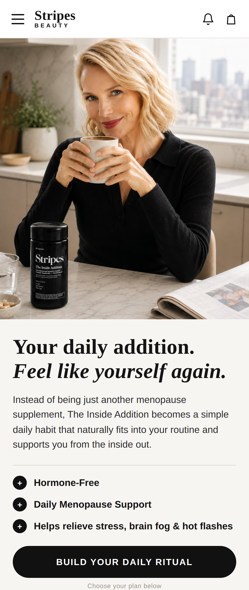

Part 2 · Launch Strategy
Landing Page Concept
A mobile-first landing page designed to guide social traffic through a clear conversion journey.

Live prototype
zyg-home-assignment.vercel.app
1
Attention
Hero with
Naomi Watts
& clear positioning
2
Recognition
Common menopause symptoms users identify with
3
Solution
The Inside Addition as a
simple daily habit
4
Why it works
Benefits + key ingredients
5
Proof
Results, TikTok content & customer reviews
6
Trust
Naomi's story and brand credibility
7
Conversion
Focused purchase section
with minimal friction
ZyG
Stripes
BEAUTY